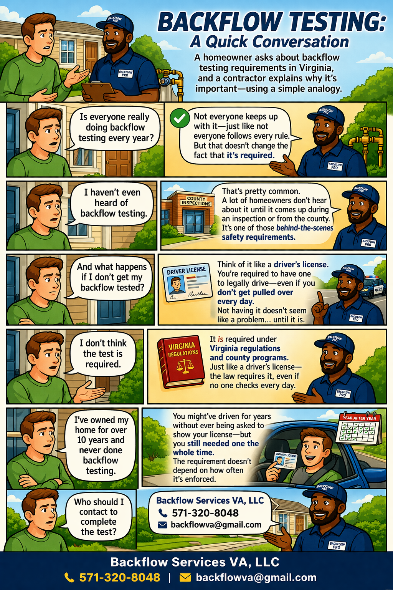

Answers to the most common questions about backflow testing, Virginia compliance requirements, our services, and what to expect when you work with us.
A backflow preventer is a mechanical device installed on your plumbing that stops contaminated water from flowing backward into the public water supply. Under certain pressure conditions — like a main break or high demand — water can reverse direction and carry pollutants from your property into the municipal supply, creating serious public health risks.
These devices use check valves and pressure relief mechanisms to ensure water only flows in one direction: from the supply into your property, never the other way around.
A cross-connection is any actual or potential link between your private plumbing and the public water supply where backflow could occur. Common examples include:
If you have an in-ground irrigation system, fire suppression system, or commercial connection, you almost certainly have a backflow preventer. For irrigation, it's typically located near the main water supply line, often in a ground-level box or above ground near the house foundation.
For fire systems, it's usually in the basement or mechanical room near where the sprinkler line enters the building. If you're unsure, give us a call — we're happy to help you locate it at no charge.
Virginia requires annual testing for all regulated backflow prevention assemblies. In addition, a test is required immediately after initial installation and immediately after any repair before the device is returned to service.
Some high-hazard applications (like chemical plants, hospitals, or certain industrial facilities) may be required by their water authority to test more frequently.
A standard test for a single assembly typically takes 30–60 minutes. If repairs are needed, add time depending on the complexity. For properties with multiple assemblies, we schedule sufficient time to complete all testing in a single visit whenever possible.
You do not need to be present for the test if we have access to the assembly location.
Yes — there will be a brief water interruption, typically just a few minutes, while the test is performed. For irrigation systems, this rarely affects daily operations.
For commercial facilities or properties where downtime is sensitive, we can schedule testing during off-hours, early mornings, or weekends. Just let us know your requirements when scheduling.
Not necessarily. If the assembly is accessible — in an outdoor ground box, near the meter, or in a common mechanical room — we can often complete the test without you being present. We'll always confirm access details when scheduling.
If the device is inside your home or in a locked area, someone will need to provide access.
A failed test means the device isn't operating correctly and must be repaired or replaced before being returned to service. We carry repair parts for most common assembly types on our trucks, so we can often fix the issue on the spot.
After any repair, we perform an immediate re-test to confirm the device passes before we leave. We then file the updated passing report with your water authority.
The most common causes of test failure include:
Most of these are normal wear-related failures that are easily repaired in the field.
Minor repairs — replacing a check valve seat, disc, O-ring, or relief valve — typically take 30–60 minutes and can be done on-site. Major repairs or full assembly replacement may require a follow-up visit if we need to order a specific part.
We'll always give you a clear estimate before starting any repair work.
Yes. Virginia's plumbing code and virtually all Richmond-area water authorities require a backflow preventer on all irrigation systems connected to the public water supply. This is because irrigation systems contact soil, fertilizers, pesticides, and other contaminants.
The type of device required — PVB, RPZ, or DC — depends on your system design and local water authority requirements. We can assess this for you free of charge.
Non-compliance can result in:
If you've received a notice, contact us immediately — we offer expedited response to help you avoid shutoff.
It is the property owner's responsibility. Your water authority will send reminders, but they are not responsible for scheduling or paying for your test. If you miss the deadline, the consequences fall on you as the property owner.
We offer an annual reminder service to ensure you never miss your test date — just ask us to add you to our reminder list when you schedule service.
Yes — always. Filing the test report with your water authority is included in every service we provide. We are approved testers on file with all major Richmond-area water utilities and submit results electronically within 24 hours of service.
You receive a copy of the completed report for your own records via email.
Absolutely. Every technician holds an ASSE Series 5000 certification (the industry standard for backflow testing in the United States) and is licensed under Virginia DPOR as a plumbing contractor. We carry full general and professional liability insurance on every job.
We are open 7 days a week, including Saturday and Sunday, from 6:00 AM to 8:00 PM. For urgent compliance situations — water shutoff notices or same-day emergencies — call or text us directly at (571) 320-8048 and we'll do our best to get someone out as soon as possible.
For standard annual testing, we typically schedule within 3–5 business days. Same-day and next-day appointments are often available for urgent situations. Commercial and multi-unit bulk scheduling can be coordinated around your preferred dates with advance notice.
Pricing depends on the assembly type, number of assemblies, accessibility, and your location. We provide upfront quotes before any work begins — no surprise charges. Contact us for a quote specific to your property.
Commercial and multi-unit property owners qualify for volume pricing on bulk testing programs.
The test fee and any repair work are quoted separately. We always get your approval before performing any repair work. The re-test after a repair is included at no additional charge.
Yes. We offer discounted rates for properties with 3 or more assemblies to test, HOA and property management portfolios, and commercial clients with multiple locations. Ask about our commercial program pricing when you contact us.

We're always happy to answer questions before you commit to anything. Give us a call or send us a message and we'll get back to you promptly.